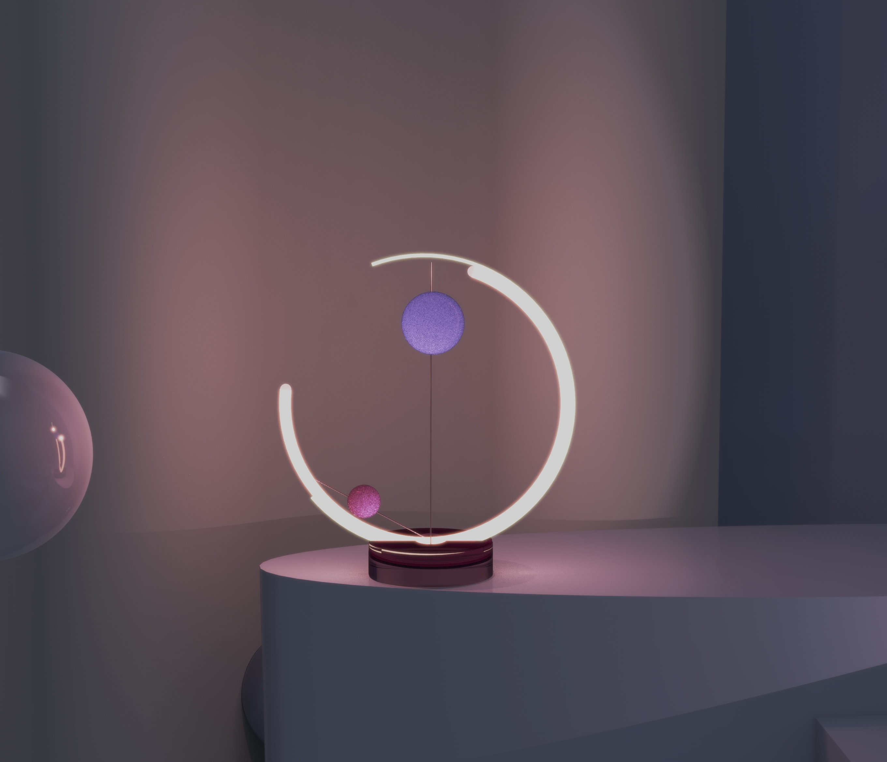

projects

G E M I N I.
Adjustable ambient luminaire,
Product semantics is not only linked to meaning, but is also important for conveying emotion.

Inspired by astrology, the two built-in light bulbs are like planets and changing their position relative to each other changes the ambient pattern of the light.
It is called "aspects" in astrology, a concept that coincides with semantics, and the emotional colouring of the light is designed from the emotions of the different aspects.